Pertemuan 3#
similiarty dan dissimiliarity#
mengukur secara numerik bagaimana kesamaan dua objek data
tinggi nilainya bila benda yang lebih mirip
range [0,1]
Dissimiliarity#
Ukuran numerik dari perbedaan dua objek
Sangat rendah bila benda yang lebih mirip
Minimum dissimilarity 0
Data matrix dan dissimiliariy matrix#
data matrix
n titik data dengan p dimensi
two modes
dissimiliarity matrix
n titik data yang didata adalah jarak/distance
matrix segitiga
single mode
tugas#
kemampuan menarik data dari database mysql,postgre,json
data understanding outlier,missing values,
perbedaan fitur dan label
menghitung jarak tipe datanya campuran ordinal,biner,numerik,kategorikal
install driver konek ke postgresql#
PS D:\orange> D:\orange\python.exe -m pip install PyQtWebEngine
PS D:\orange> D:\orange\python.exe -m pip install psycopg2-binary
PS D:\orange> D:\orange\python.exe -m pip install pymysql
PS D:\orange> D:\orange\python.exe -m pip install mysqlclient
PS D:\orange>
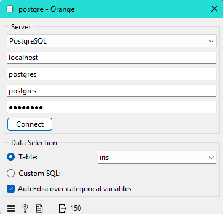
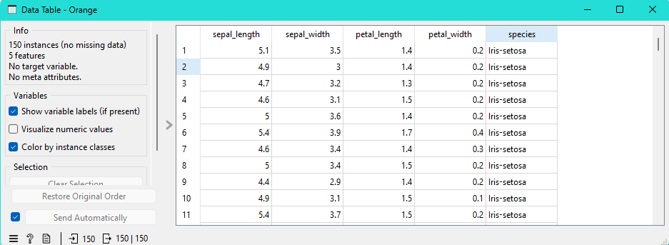
connect mysql lewat python#
import mysql.connector
import pandas as pd
from Orange.data import Table, Domain, ContinuousVariable, DiscreteVariable
import numpy as np
conn = mysql.connector.connect(
host="localhost",
user="root",
password="Elghifary123",
database="iris"
)
query = "SELECT * FROM iris;"
df = pd.read_sql(query, conn)
conn.close()
df["species"] = df["species"].str.strip()
features = [
ContinuousVariable("sepal_length"),
ContinuousVariable("sepal_width"),
ContinuousVariable("petal_length"),
ContinuousVariable("petal_width"),
]
class_values = sorted(df["species"].unique())
class_var = DiscreteVariable("species", values=class_values)
domain = Domain(features, class_var)
X = df.iloc[:, 0:4].values.astype(float)
Y = np.array([class_values.index(v) for v in df["species"]])
out_data = Table.from_numpy(domain, X, Y)
ambil data dari JSON#
import json
import pandas as pd
from Orange.data.pandas_compat import table_from_frame
lokasi_file = r"C:\Users\LENOVO\OneDrive\Documents\KULIAH\semester 4\penambangan data\nobel-prize-winners-by-year.json"
with open(lokasi_file, 'r', encoding='utf-8') as f:
data_json = json.load(f)
baris_data = []
for tahun_data in data_json:
tahun = tahun_data.get("year", "")
for kategori_data in tahun_data.get("winners", []):
kategori = kategori_data.get("category", "")
for pemenang in kategori_data.get("winners", []):
nama = pemenang.get("name", "")
negara = pemenang.get("country", "")
pencapaian = pemenang.get("achievement", "")
baris_data.append({
"Year": tahun,
"Category": kategori,
"Name": nama,
"Country": negara,
"Achievement": pencapaian
})
df = pd.DataFrame(baris_data)
out_data = table_from_frame(df)
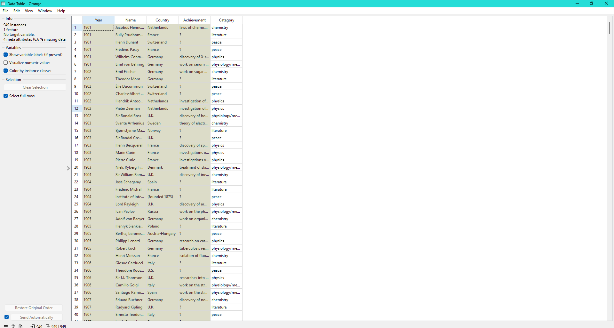
Data Understanding#
Data Understanding merupakan tahapan awal dalam proses data mining yang bertujuan untuk memahami karakteristik, struktur, dan kualitas data sebelum dilakukan proses analisis lebih lanjut. Pada tahap ini dilakukan eksplorasi data untuk mengidentifikasi pola, distribusi nilai, serta mendeteksi adanya permasalahan seperti outlier dan missing values. Tahapan ini sangat penting karena kualitas data akan sangat mempengaruhi hasil pemodelan dan analisis.
Outlier#
Outlier adalah nilai data yang memiliki perbedaan signifikan dibandingkan dengan sebagian besar data lainnya dalam suatu dataset. Nilai ini biasanya berada jauh di luar rentang distribusi normal data.
Keberadaan outlier dapat disebabkan oleh kesalahan pencatatan, kesalahan input data, atau memang merupakan fenomena yang jarang terjadi. Outlier dapat mempengaruhi hasil analisis statistik, terutama pada metode yang sensitif terhadap nilai ekstrem seperti perhitungan rata-rata (mean) dan standar deviasi.
Beberapa metode yang umum digunakan untuk mendeteksi outlier antara lain:
Boxplot
Z-Score
Interquartile Range (IQR)
Penanganan outlier dapat dilakukan dengan menghapus data tersebut atau melakukan transformasi tertentu sesuai dengan kebutuhan analisis.
Missing Values#
Missing values adalah kondisi ketika suatu atribut atau variabel tidak memiliki nilai (kosong atau NULL). Missing values dapat terjadi karena data tidak diinput, kesalahan sistem, atau kehilangan data saat proses pengumpulan.
Keberadaan missing values dapat menghambat proses analisis dan pemodelan karena sebagian besar algoritma machine learning tidak dapat memproses nilai kosong.
Beberapa metode penanganan missing values antara lain:
Menghapus baris data yang mengandung nilai kosong
Mengisi nilai kosong dengan rata-rata (mean)
Mengisi dengan median atau modus
Menggunakan teknik imputasi statistik
Pemilihan metode penanganan harus disesuaikan dengan karakteristik data dan tujuan analisis.
Perbedaan Fitur dan Label#
Dalam konteks machine learning dan data mining, terdapat dua komponen utama dalam dataset, yaitu fitur dan label.
Fitur (Feature)#
Fitur adalah variabel atau atribut yang digunakan sebagai input dalam proses pemodelan. Fitur berfungsi sebagai informasi yang digunakan untuk melakukan prediksi atau pengelompokan.
Fitur biasanya direpresentasikan sebagai variabel independen dan sering dilambangkan dengan simbol X. Dalam dataset, fitur dapat berupa data numerik maupun kategorikal tergantung pada kebutuhan analisis.
Contoh fitur dalam dataset bunga iris antara lain:
sepal_length
sepal_width
petal_length
petal_width
Label (Target / Class)#
Label adalah variabel yang menjadi tujuan prediksi dalam suatu model supervised learning. Label biasanya disebut sebagai variabel dependen dan dilambangkan dengan simbol Y.
Label merepresentasikan hasil atau kategori yang ingin diprediksi oleh model berdasarkan fitur yang tersedia.
Sebagai contoh, dalam dataset bunga iris, labelnya adalah:
Iris-setosa
Iris-versicolor
Iris-virginica
Perbedaan Utama#
Perbedaan antara fitur dan label dapat dijelaskan sebagai berikut:
Fitur merupakan variabel input yang digunakan untuk melakukan prediksi.
Label merupakan variabel output yang ingin diprediksi.
Fitur dilambangkan dengan X, sedangkan label dilambangkan dengan Y.
Fitur dapat berjumlah lebih dari satu, sedangkan label biasanya hanya satu dalam satu model prediksi.
Pemahaman mengenai perbedaan fitur dan label sangat penting karena menentukan jenis metode analisis yang akan digunakan, seperti klasifikasi, regresi, atau clustering.
iris#
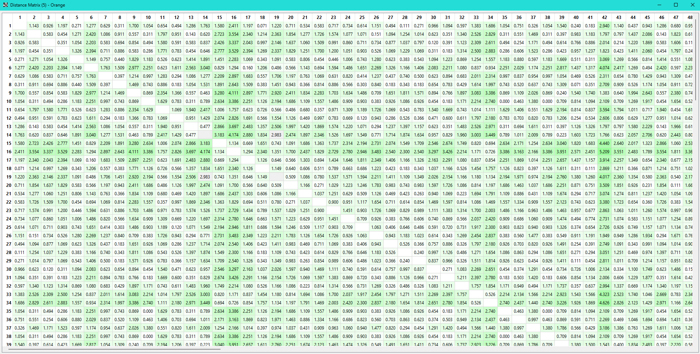
data campuran#
data mentah#
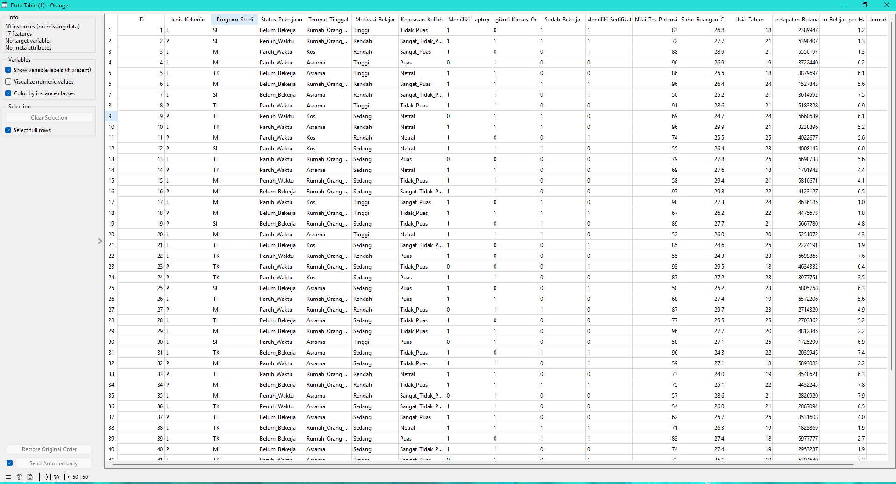
workflow orange data mining#
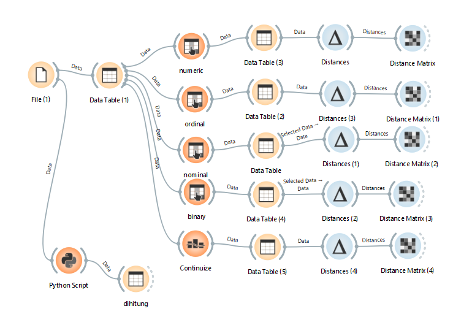
numeric (manhattan(Normalize))#
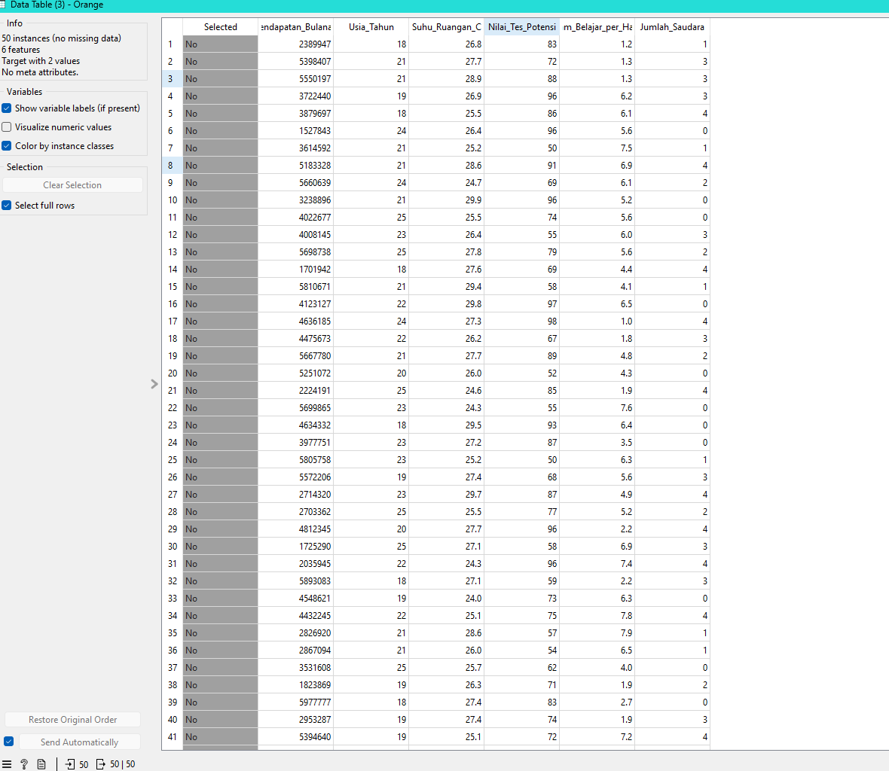
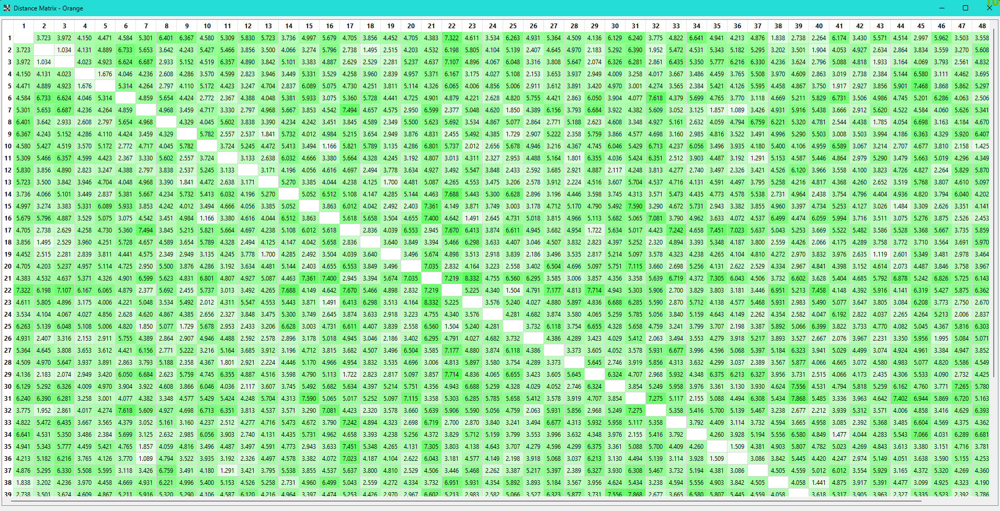
ordinal (manhattan(Normalize))#
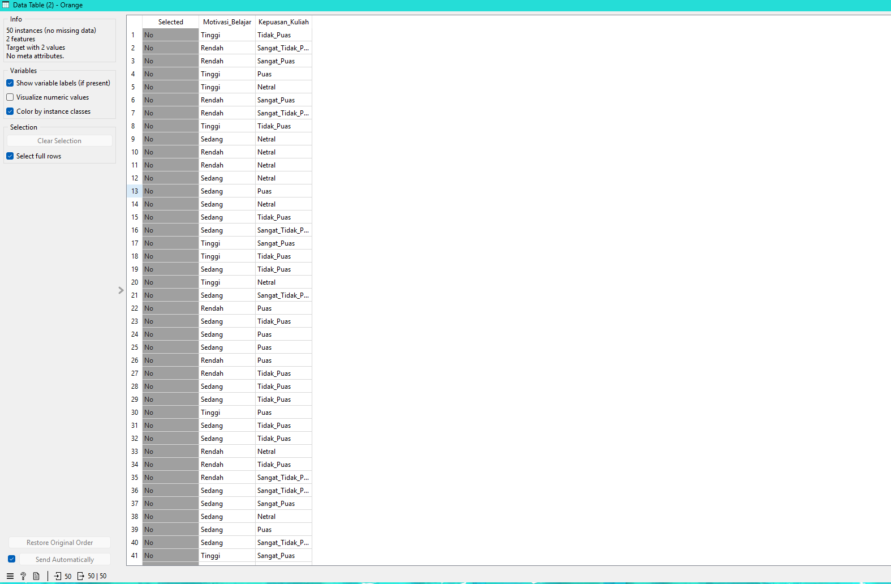
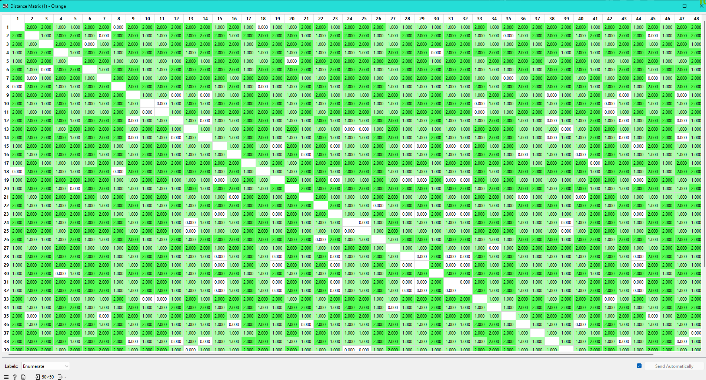
nominal (hamming)#
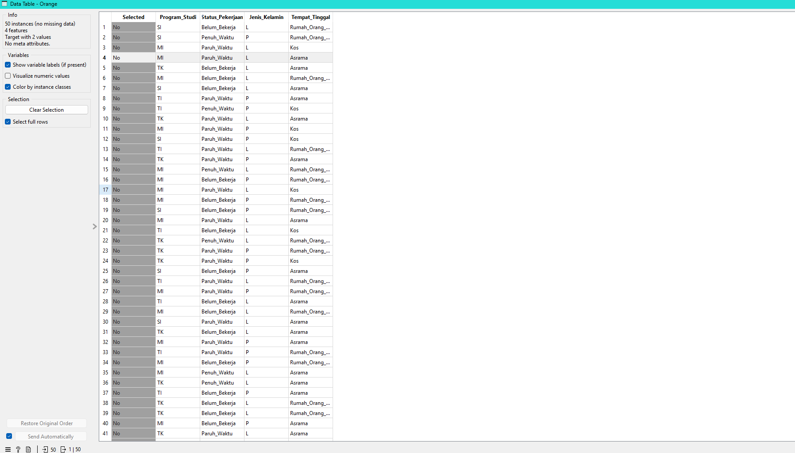
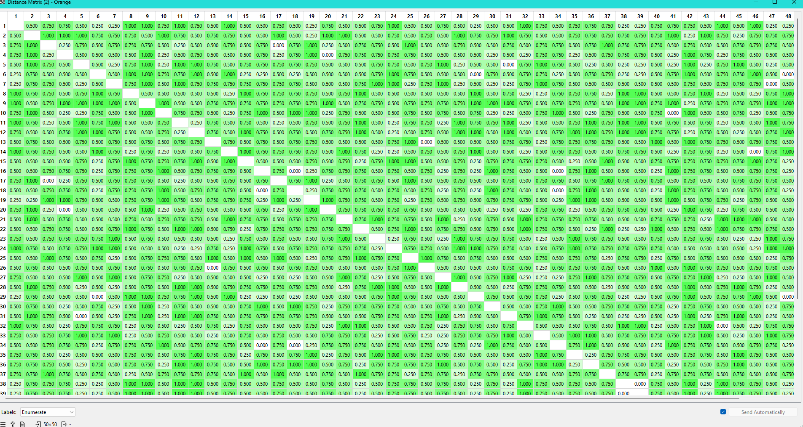
binary (jaccard)#
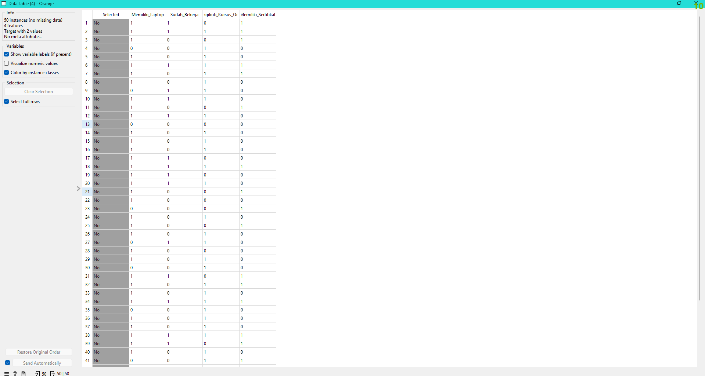
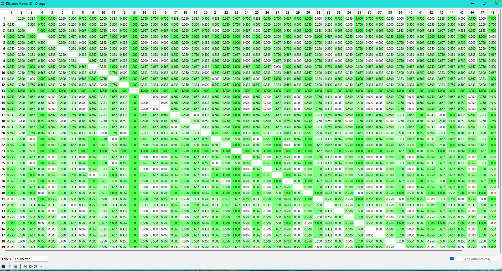
using continuize#
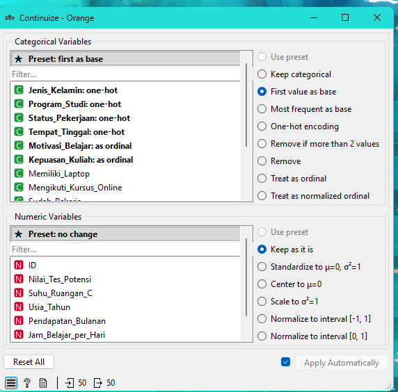
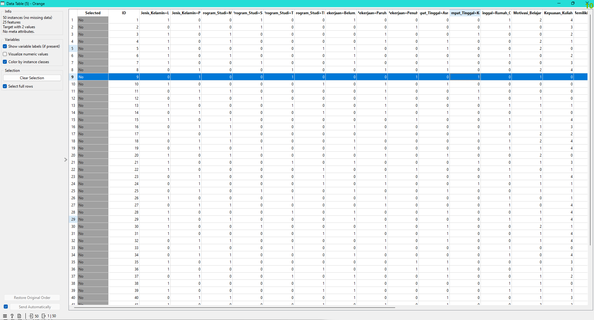
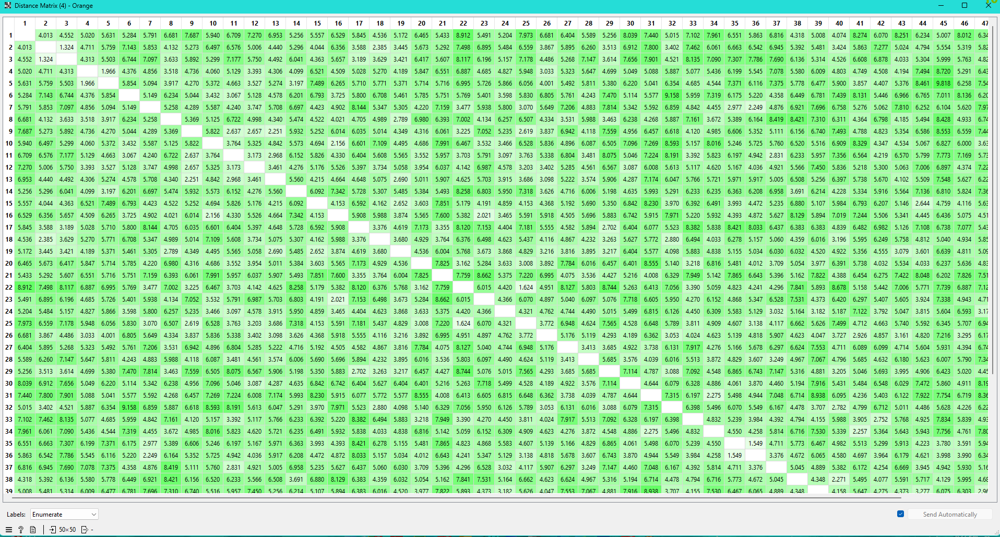
python script#
import pandas as pd
import numpy as np
from Orange.data import Table, Domain, ContinuousVariable
data = in_data
df = pd.DataFrame({var.name: data.get_column(var) for var in data.domain})
nominal = ["Jenis_Kelamin", "Program_Studi", "Status_Pekerjaan", "Tempat_Tinggal"]
binary = ["Memiliki_Laptop", "Mengikuti_Kursus_Online", "Sudah_Bekerja", "Memiliki_Sertifikat"]
ordinal = ["Motivasi_Belajar", "Kepuasan_Kuliah"]
numeric = ["Nilai_Tes_Potensi", "Suhu_Ruangan_C", "Usia_Tahun",
"Pendapatan_Bulanan", "Jam_Belajar_per_Hari", "Jumlah_Saudara"]
def normalize(col, value):
min_val = df[col].min()
max_val = df[col].max()
if max_val == min_val:
return 0
return (value - min_val) / (max_val - min_val)
def mixed_distance(row1, row2):
distances = []
# nominal
for col in nominal:
distances.append(0 if row1[col] == row2[col] else 1)
# binary
for col in binary:
distances.append(0 if row1[col] == row2[col] else 1)
# ordinal
for col in ordinal:
z1 = normalize(col, row1[col])
z2 = normalize(col, row2[col])
distances.append(abs(z1 - z2))
# numeric
for col in numeric:
z1 = normalize(col, row1[col])
z2 = normalize(col, row2[col])
distances.append(abs(z1 - z2))
return sum(distances) / len(distances)
n = len(df)
matrix = np.zeros((n,n))
for i in range(n):
for j in range(n):
matrix[i,j] = mixed_distance(df.iloc[i], df.iloc[j])
vars = [ContinuousVariable(f"D{i}") for i in range(n)]
domain = Domain(vars)
out_data = Table.from_numpy(domain, matrix)
print(matrix)
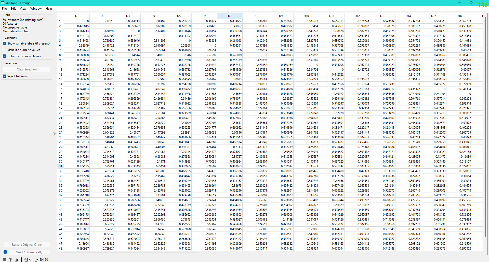
Contoh Hitung Manual Jarak ID 1 dan 2#
(Berdasarkan Algoritma Script Mixed Distance Python)
1. Perbandingan Data Objek & Penentuan Tipe#
Data di bawah ini mencakup nilai aktual objek serta tipe data yang dikonfigurasi dalam script Python. (Catatan: Nilai Min-Max diambil dari keseluruhan dataset).
Fitur |
ID 1 |
ID 2 |
Tipe Data di Script |
|---|---|---|---|
Jenis_Kelamin |
L |
P |
Nominal |
Program_Studi |
SI |
SI |
Nominal |
Status_Pekerjaan |
Belum_Bekerja |
Penuh_Waktu |
Nominal |
Tempat_Tinggal |
Rumah_Orang_Tua |
Rumah_Orang_Tua |
Nominal |
Memiliki_Laptop |
1 |
1 |
Binary |
Mengikuti_Kursus_Online |
0 |
1 |
Binary |
Sudah_Bekerja |
1 |
1 |
Binary |
Memiliki_Sertifikat |
1 |
1 |
Binary |
Motivasi_Belajar |
Tinggi (3) |
Rendah (1) |
Ordinal |
Kepuasan_Kuliah |
Tidak Puas (2) |
Sangat Tidak Puas (1) |
Ordinal |
Nilai_Tes_Potensi |
83 |
72 |
Numeric |
Suhu_Ruangan_C |
26.8 |
27.7 |
Numeric |
Usia_Tahun |
18 |
21 |
Numeric |
Pendapatan_Bulanan |
2.389.947 |
5.398.407 |
Numeric |
Jam_Belajar_per_Hari |
1.2 |
1.3 |
Numeric |
Jumlah_Saudara |
1 |
3 |
Numeric |
2. Prosedur Perhitungan Jarak Per Tipe Atribut#
Algoritma dalam script membagi perhitungan menjadi 3 blok utama, menghasilkan array jarak (distances) yang berisi total 11 elemen (8 Nominal/Biner + 2 Ordinal + 1 Gabungan Numerik).
A. Atribut Nominal & Binary (Elemen ke 1 - 8)#
Menggunakan metode Simple Matching:
\(d = 0\) jika nilai sama
\(d = 1\) jika nilai beda
Jenis_Kelamin: Beda \(\rightarrow\) 1
Program_Studi: Sama \(\rightarrow\) 0
Status_Pekerjaan: Beda \(\rightarrow\) 1
Tempat_Tinggal: Sama \(\rightarrow\) 0
Memiliki_Laptop: Sama \(\rightarrow\) 0
Mengikuti_Kursus_Online: Beda \(\rightarrow\) 1
Sudah_Bekerja: Sama \(\rightarrow\) 0
Memiliki_Sertifikat: Sama \(\rightarrow\) 0
B. Atribut Ordinal (Elemen ke 9 - 10)#
Menggunakan rumus selisih absolut dari rasio peringkat (Min-Max): $\(d = |z_1 - z_2| \quad \text{dengan} \quad z = \frac{x - 1}{M_f - 1}\)$
Motivasi_Belajar (\(M_f = 3\)):
\(z_1 = (3-1)/(3-1) = 1.0\)
\(z_2 = (1-1)/(3-1) = 0.0\)
Jarak: \(|1.0 - 0.0| =\) 1.0
Kepuasan_Kuliah (\(M_f = 5\)):
\(z_1 = (2-1)/(5-1) = 0.25\)
\(z_2 = (1-1)/(5-1) = 0.0\)
Jarak: \(|0.25 - 0.0| =\) 0.25
C. Atribut Numerik (Elemen ke 11 / Gabungan Numerik)#
Seluruh variabel numerik di-Min-Max terlebih dahulu, kemudian dicari selisih kuadratnya \((z_1 - z_2)^2\).
Nilai_Tes_Potensi (Min: 50, Max: 99):
\(z_1 = 0.6735, z_2 = 0.4490 \rightarrow (0.6735 - 0.4490)^2 =\) 0.0504
Suhu_Ruangan_C (Min: 24.0, Max: 29.9):
\(z_1 = 0.4746, z_2 = 0.6271 \rightarrow (0.4746 - 0.6271)^2 =\) 0.0233
Usia_Tahun (Min: 18, Max: 25):
\(z_1 = 0.0, z_2 = 0.4286 \rightarrow (0.0 - 0.4286)^2 =\) 0.1837
Pendapatan_Bulanan (Min: 1.527.843, Max: 5.977.777):
\(z_1 = 0.1937, z_2 = 0.8698 \rightarrow (0.1937 - 0.8698)^2 =\) 0.4571
Jam_Belajar_per_Hari (Min: 1.0, Max: 7.9):
\(z_1 = 0.0290, z_2 = 0.0435 \rightarrow (0.0290 - 0.0435)^2 =\) 0.0002
Jumlah_Saudara (Min: 0, Max: 4):
\(z_1 = 0.25, z_2 = 0.75 \rightarrow (0.25 - 0.75)^2 =\) 0.2500
Sesuai perintah pada script np.sqrt(num_sq_sum / valid_num_cols):
Total Kuadrat \(= 0.0504 + 0.0233 + 0.1837 + 0.4571 + 0.0002 + 0.2500 =\) 0.9647
Jarak Gabungan Numerik \(= \sqrt{0.9647 / 6} = \sqrt{0.16078} =\) 0.4010
3. Akumulasi dan Hasil Akhir#
Sesuai dengan baris akhir pada script (sum(distances) / len(distances)), seluruh 11 elemen dalam array dijumlahkan, kemudian dibagi dengan total elemen tersebut.
Total Sum (Jumlahan array distances): \(1 + 0 + 1 + 0 + 0 + 1 + 0 + 0 + 1.0 + 0.25 + 0.4010 = \mathbf{4.6510}\)
Mixed Distance Akhir: $\(d(1, 2) = \frac{4.6510}{11} = \mathbf{0.4228}\)$
Kesimpulan: Perhitungan jarak campuran antar ID 1 dan ID 2 menghasilkan nilai 0.4228. Nilai ini merepresentasikan integrasi berbagai tipe data (nominal, biner, ordinal, dan numerik) menjadi satu metrik jarak tunggal yang komprehensif.